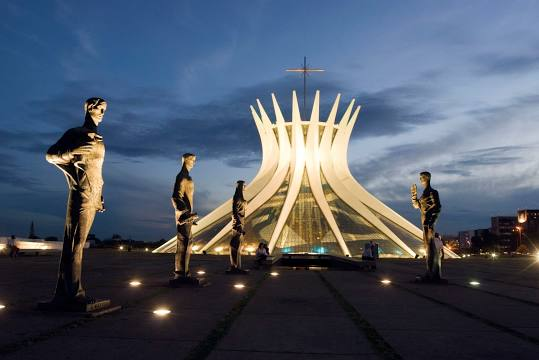
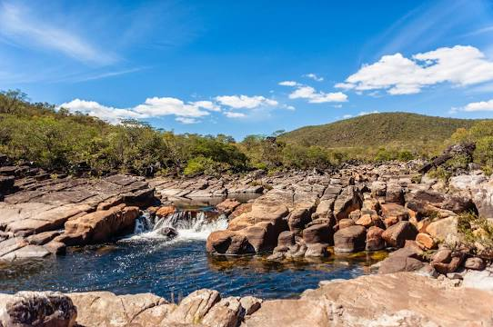

Gruta do lago azul

Monumento Natural da Gruta do Lago Azul é um monumento natural no município de Bonito, Mato Grosso do Sul, Brasil. Possui duas cavernas com formações calcárias interessantes, mas frágeis, e está listada como área protegida desde 1978.
Catedral Metropolitana
A Catedral Metropolitana - Nossa Senhora Aparecida, mais conhecida como Catedral de Brasília, é um templo católico brasileiro, na qual se encontra a cátedra da Arquidiocese de Brasília, localizada na capital federal, ao sul da S1, no Eixo Monumental, região da Esplanada dos Ministérios. Sua arquitetura foi concebida por Oscar Niemeyer e é por vezes considerada sua obra-prima, tendo sido graças a ela que o arquiteto venceu o Prêmio Pritzker, considerado equivalente ao Nobel de sua profissão, em 1988.
Parque Nacional da Chapada dos Veadeiros
O Parque Nacional da Chapada dos Veadeiros é uma unidade de conservação brasileira de proteção integral à natureza localizada na região centro-oeste do estado de Goiás, na Chapada dos Veadeiros.